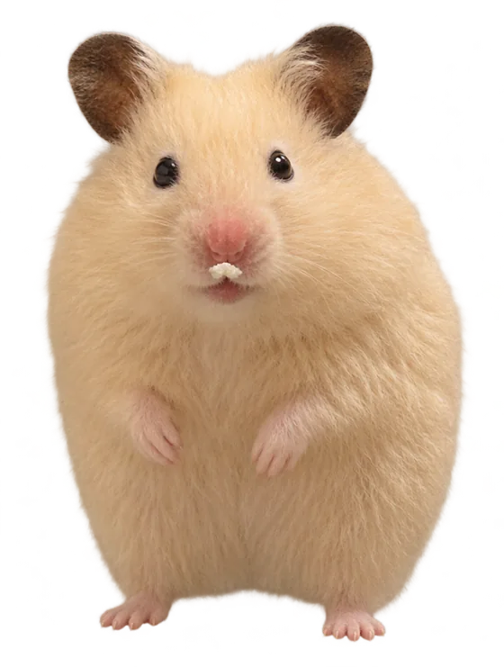

01 / WEB & EXPERIENCE
SHITEN
ひとつのものを、いろんな視点から見てみる。ウェブで体験をつくる試み。
拾って、観察して、考えて、つくる。
気になるものが、いつも次の入り口。
かなちの小さな仲間。
ここにも、ひとつ好きなものを飾っておく。

かなち。
大学、DX、九谷焼。
でも、それだけでは終わらない。
好きなものは、この先に。
ひとつめの
自己紹介は、
紙の下。
説明するより、見つけてほしい。
好きなものが、勝手に出てくる。
ひとつのものを、いろんな視点から見てみる。ウェブで体験をつくる試み。
ものづくりの背景を、もっと伝わる体験へ。展示、企画、発信に取り組む。
思いついたら、まず形にしてみる。サイト、観察、アイデアの断片。
いまの興味も、これからの方向も、
きっと変わっていく。
だからここは、更新され続ける場所。
やってみたいこと。途中で気が変わったこと。まだ誰にも見せていない考え。
完成したものだけじゃなくて、途中のものにも、けっこう惹かれる。
小さなひみつ：このサイトには、もうひとつ入口が隠れています。